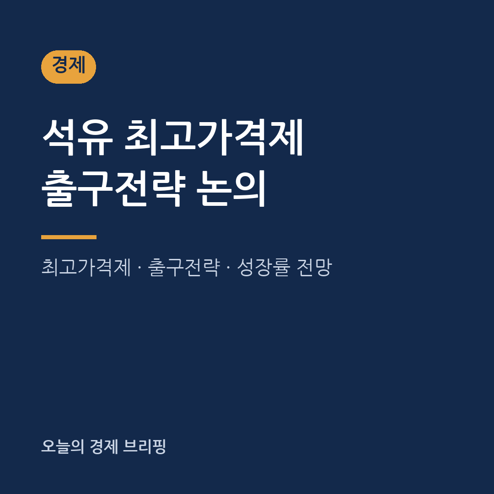
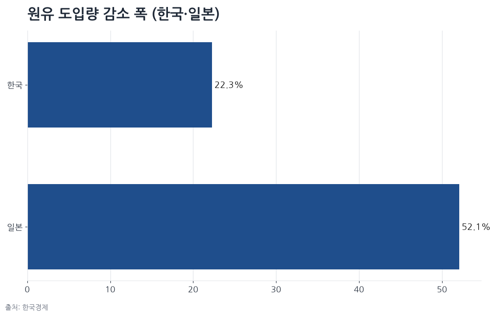

2026-11-24-1435-tistory 발행 키트 · 이 페이지는 검색에 노출되지 않습니다.
제목
카테고리
경제태그
본문 (그림·표 포함)
휴대폰 블로그 앱에서는 그림이 같이 붙지 않을 수 있어요. 그때는 [글자만 복사] 후 아래 이미지를 저장해 [그래프1]·[표1] 자리에 첨부하세요.

정부가 3월 13일부터 시행한 석유 최고가격제가 9개월째 이어지면서 시장 왜곡과 형평성 문제가 부각되고 있습니다. 한국경제 보도에서는 가격 현실화를 단계적으로 추진하고 종료 기준을 미리 공개해야 한다는 방향이 제시됐습니다. 같은 날 골드만삭스는 내년 한국 성장률을 3.2%로 전망했습니다.
▶ 제도의 배경과 구조
석유 최고가격제는 정유사가 대리점과 주유소에 공급하는 석유제품 가격에 상한을 두는 정책입니다. 중동 전쟁의 여파로 호르무즈해협이 봉쇄된 직후인 3월 13일에 도입됐으며, 국민 부담 완화가 목적이었습니다.
상한 때문에 정유사에 생기는 손실은 정부가 사후에 보전합니다. 1차 정산 대상은 3~6월분이고, 다음 달 초 집행을 목표로 절차가 진행 중입니다.
▶ 시행 9개월, 지적되는 부작용
에너지경제연구원 분석을 인용한 보도에 따르면 부작용은 크게 네 가지로 정리됩니다.
최고가격제 주요 부작용
| 구분 | 지적 내용 |
|---|---|
| 시장 기능 | 가격 신호 약화, 수요 조절 기능 저하 |
| 현물 공급 | 현물 물량 공급 감소 |
| 유통 현장 | 대리점·영세 주유소 수익성 악화 |
| 형평성 | 차량 보유가 많은 고소득층에 혜택 집중 |
출처: 한국경제
가격이 낮게 유지되면 소비자는 사용량을 줄일 유인을 잃습니다. 수요 조절 기능이 약해지는 이유입니다.
또 공급 가격 상한이 내려가면서 현물 물량 공급이 줄었고, 그 부담이 대리점과 영세 주유소의 수익성 악화로 이어졌다는 설명입니다.
▶ 기사에 나온 수치
전년 동기와 비교한 국내 휘발유 판매량은 1.5% 감소했습니다. 원유 도입량 감소 폭은 한국이 22.3%, 일본이 52.1%로 비교됐습니다.

일본의 감소 폭이 한국보다 크다는 점이 눈에 띕니다. 다만 기간과 산정 기준 등 세부 조건까지 확인되지 않았으므로, 제도 효과를 평가하는 근거로 쓰기보다 참고 수치로 보는 편이 적절합니다.
▶ 제안된 출구전략
핵심은 두 가지입니다. 첫째, 한 번에 해제하지 않고 단계적으로 가격을 현실화합니다. 둘째, 국제 유가와 재고 수준 등을 반영한 종료 기준을 사전에 공표해 시장의 예측 가능성을 높입니다.
갑작스러운 해제는 가격 급등을 부를 수 있으므로, 기준과 시점을 예고하는 방식이 논의의 중심에 있습니다.
▶ 골드만삭스의 내년 한국 전망
글로벌 투자은행 골드만삭스는 24일 내년에도 한국이 3%대 성장을 이어갈 것으로 전망했습니다. 성장률은 3.2%, 기준금리 전망의 상단은 3.5%로 제시했습니다.
골드만삭스 내년 한국 전망
| 항목 | 전망 |
|---|---|
| 경제성장률 | 3.2% |
| 기준금리 상단 | 3.5% |
출처: 연합뉴스
이는 해외 IB 한 곳의 전망입니다. 구체적인 근거는 확인하지 못했으므로 수치만 참고하시기 바랍니다.
▶ 앞으로 확인할 점
첫째, 정부가 종료 기준과 단계적 해제 일정을 어떻게 발표하는지 확인해야 합니다. 둘째, 다음 달 초로 예정된 정유사 손실보전 1차 정산이 계획대로 집행되는지도 볼 필요가 있습니다.
▶ 정리
1. 석유 최고가격제는 3월 13일 시행 후 9개월째이며, 가격 신호 약화와 형평성 문제가 지적됩니다.
2. 제안된 출구전략은 단계적 가격 현실화와 종료 기준 사전 공표입니다.
3. 골드만삭스는 내년 한국 성장률을 3.2%, 기준금리 상단을 3.5%로 전망했습니다.
이미지 (개별 복사·저장)
출처 (본문 맨 아래에 붙여넣기 권장)
- 한국경제, "석유 최고가격제 장기화 부작용 커져…단계적 출구 전략 찾아야", https://www.hankyung.com/article/202611246607i - 연합뉴스, 골드만삭스 "한국, 내년 3.2% 성장 전망…기준금리 상단 3.5%", https://www.yna.co.kr/view/AKR20261124112800008